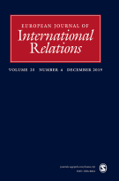

收录于合集
作品简介
【作者】 Andrew Phillips，澳大利亚昆士兰大学助理教授。
【编译】 李源（国政学人编译员，吉林大学公共外交学院）
【校对】 蔡宇
【审核】 曹鹏鹏
【排版】 吴俣
【来源】 Phillips, A. (2018). Contesting the Confucian peace: Civilization, barbarism and international hierarchy in East Asia. European Journal of International Relations , 24(4), 740–764.
期刊介绍

European Journal of International Relations,《欧洲国际关系杂志》（EJIR）是欧洲政治研究联盟国际关系常设小组（the Standing Group on International Relations of the European Consortium for Political Research, SGIR）的同行评审旗舰期刊, 由SGIR和欧洲国际研究协会组成的联合委员会共同管理。2018年该期刊的影响因子为2.756。
争论中的儒家和平：文明、野蛮与东亚的国际等级制
Contesting the Confucian peace: Civilization, barbarism and international hierarchy in East Asia
Andrew Phillips
内容提要
受近些年来有关古代中国朝贡体系研究的影响与启发，本文完善了国际关系学界对清朝时期国际等级制如何在东亚地区产生并维持的概念化研究。文章认为，现有东亚地区的等级制概念夸大了该地区儒家王朝之间相互认同对维持古代中国霸权地位的重要性。相反，只有认识到清朝是一个“蛮夷”王朝时，我们才能理解为何清朝的统治地位面临着国内与国际统治合法化的独有挑战。作为一个“蛮夷”征服者，清朝并没有仅仅通过完全遵循业已存在的儒家文化规范来确保自己的统治，其“蛮夷”身份阻碍了清朝完全接受儒家意识形态。事实上，清朝采取“异质契约”(heterogeneous contracting)的策略来维持其统治地位。在帝国内部，它针对不同的文化地域制定了不同的合法化政策以便赢得不同地域的忠诚。在国际上，清朝采用了现有的儒家规范和朝贡外交的实践模式，以便减轻但不会彻底消除周边儒家化政权对“蛮夷”统治的不满。东亚地区的等级制模式似乎比威斯特伐利亚体系下无政府状态更加和平，但战争的缺席掩盖了现实中的武力，对儒家思想的一致接受也掩盖了清朝与其看似忠诚的附庸之间脆弱的关系。
文章导读
一、回顾儒家和平论
关于儒家和平论，学者们提出了三点相互关联的主张。第一，历史上东亚地区政治实体之间的暴力冲突模式与同时期的西欧有着根本的差异。分裂的欧洲以战争和强者消灭弱者为特征，而东亚地区的政治实体之间却享受着长期的和平。第二，将东亚与西方的冲突模式与各自国际秩序的不同构成相联系。欧洲从中世纪步入无政府状态下的主权国家体系，而东亚则直至19世纪末一直维持着以中国为中心的持久的等级制模式。第三，将东亚所谓的和平状态与以中国为中心的儒家等级制相联系。持儒家和平论观点的学者指出，以中国为中心的儒家等级制维护了东亚地区和平，这主要归因于地区共享的规范与制度，而非古代中国无与伦比的物质实力。他们在解释东亚等级制模式的持久稳定时，强调观念因素胜过物质因素。毫无疑问，他们是明显的建构主义者。接下来，作者回顾并反思了儒家和平论的三个理论假设：共同文化；儒家文化圈内的相互认同；共同政体形式的制度整合。
儒家和平论强调历史上东亚地区的独特性，其稳定而持久的等级制度建立在共同文化与相互认同的基础之上，这与西方无政府状态下的暴力与冲突形成了鲜明对比。 这种观点恰如其分地描述了古代东亚地区体系中中韩、中越两国间不同寻常的和平。 然而，自 17世纪中叶以来，东亚地区处于一个军事化、非中国化的“蛮夷”王朝的统治之下，它将文化差异而非文化趋同作为帝国内部事务与地区外交的支柱，这可能是儒家和平论所没有看到的。
老一辈的东亚历史学家强调清朝对明朝时期儒家外交实践模式的继承。然而，作者强调，这种所谓的继承性定是幻想中的。 虽然明清时期和平盛行在东北亚地区的儒家王朝之间，但在清朝其基础却迥然不同。 明朝时期，尽管该地区存在着周期性的紧张关系，但 真正的文化认同将明朝与其儒家化附庸紧密联系在一起。 然而，尽管清朝仍然准备利用儒家规范与其外交实践模式来实现其特定目的， **但基于其 “蛮夷”身份，清朝却对儒家思想有着极大的矛盾态度。**同时，尽管儒家化的周边附庸出于自我保护的目的，公开遵守了朝贡外交模式，但 清朝的 “蛮夷”身份也使得它们无法真正地认同清朝统治。 作为结果，清朝与其儒家化的周边附庸之间维持着一种“冷和平”( cold peace ) 关系，这与儒家和平论所设想的截然不同。
二、文明，野蛮与古代东亚的等级制
为理解东亚等级制模式的基础，我们必须首先考虑到该地区的基本断层线： 文明与野蛮的划分。 自唐代以来，古代中华帝国的核心要素得以生根发芽，这包括中央集权官僚体制与科举制度的兴起。这些改革极大提高了中央的“基础性权力”(infrastructural power)，并大大减少了历代王朝所面临的离心压力。
南宋时期，新儒家思想的兴起进一步促进了中华帝国的形成，并将文明——野蛮视为东北亚地区的基本分界线。新儒家思想体现了普遍的父权制世界观，将所有社会关系视为父子关系的变体。它要求“上级”用仁慈来对待“下级”，以换取他们的服从，认为人性是可塑的和可完善的，并设想皇帝通过领导榜样和“礼”的行为在改善其人民的道德和物质条件方面发挥着中心作用。新儒学思想进一步巩固了古代中国精英阶层的身份，使得地方精英能够以维持地方治安或通过在帝国官僚机构中任职的方式为国家服务，由此巩固了王朝统治。同时，它并非中国所独有，而是传播到了中国的周边地区，尤其是在日本、朝鲜与越南。
然而，儒家思想指导下的国家构建也加剧了中国与其陆上周边政权之间的鸿沟。这些陆上周边政权的人口主体是牧民，其统治更多是基于血统的个人化统治，通常缺乏中央集权的官僚体制与自己的文字。因此，儒家精英将他们视为原始好战与未开化的“野蛮人”。儒家精英们所争论的是是否这些野蛮人可以通过接触儒家思想而得到改善。然而，他们都认为 “文明人”对“野蛮人”具有绝对的道德优势，并强调这一区别必须得到遵守 ，这是这一争论所依赖的共识。从13世纪中叶开始，伴随着元朝与清朝的建立，文明与野蛮之间的区别不仅是一种认知上的共识，而且具有了极大的现实紧迫性。 在元清两朝，以中国为中心的规范与物质实力等级制都发生了根本性的错位。 作者强调， 我们必须清晰地认识到这种错位，它是我们理解 “蛮夷”王朝所独有的合法性挑战和他们为缓解这些挑战、巩固霸权地位所采取的策略的关键。
对儒家精英来说，“蛮夷”统治意味着文明世界的倒置。虽然有一些儒家精英相信儒家思想可以同化这些“蛮夷”，但对许多人来说，被“蛮夷”统治仍是造成他们不满的根源，从而阻碍了人们完全接受“蛮夷”的统治地位。面对这样的现实， “蛮夷”身份使得这些王朝寻求合法化的努力更加复杂化 。 一方面，他们要寻求与借助儒家思想，并受其所影响； 另一方面，他们又担心自己的集体身份会被儒家文化所溶解甚至彻底消失，害怕在儒家化过程中对自身本体安全 ( ontological security )的威胁。 因此，合法化策略中必要的区分增强了“蛮夷”王朝不同于其所统治的儒家文化区的自身特性。
国际关系中的“异质契约”(heterogeneous contracting)概念抓住了“蛮夷”王朝合法化策略的关键。“异质契约”认为，帝国是建立在帝国中心为其主体地域量身定做的契约之中，通过对不同地域采取不同的合法化策略，赢得不同地域的合法化与忠诚。 “蛮夷”王朝就是主要依靠“异质契约”策略来维持其统治的。 他们呼吁儒家思想以确保国内儒家精英与受儒家文化影响的邻国的忠诚，但又对不同的文化地域采取了不同的策略以维持自身特性。他们选择性和策略性地使用儒家思想，将其视为一种稳定其不同地域统治的合法化资源，而非被动式地儒家化。
三、统治策略的多样性与清朝时期东亚的合法化政治
本部分以清朝为研究对象，分析其作为一个“蛮夷”王朝的合法化策略。本部分主要涉及以下三个相互关联的问题： 第一，什么是满洲族？第二，满洲族身份如何促成他们的合法化策略？第三，这些策略如何影响清朝为管理其周边政体而制定的国际秩序？
1.满洲族的混杂性
为了理解满清王朝所建立的国际秩序，我们必须首先理解满洲族独特的集体身份，特别是他们对儒家思想的矛盾态度。
作者回顾了满洲族建立与发展的大体脉络，认为满洲族身份从一开始就具有混杂性特征(hybridity)。女真族（满洲族）首领们煞费苦心地建立了一个由女真人（满洲族人）、汉族人、蒙古人与朝鲜人组成的多民族联盟以打败明朝。他们广泛地从周边政权中进行文化借鉴以建立一个新的满族身份，并借以巩固他们的统治。随着满洲族政权的扩张及其行政管理成本的增加，它将其借鉴吸收的对象扩展至儒家文化国家。他们效仿儒家的官僚体制，建立了六部制。这种选择性的中国化加强了满洲族自身的行政能力并增强了他们赢得儒家知识分子的能力。
满洲族虽然借鉴于儒家思想进行了这些改革，但 它仍对儒家思想有着近乎矛盾的态度。 这种矛盾态度的原因是：满洲人在历史上不仅被明朝，而且被儒家化的其他“文明”国家，尤其是朝鲜这样的周边政权诋毁为“野蛮人”。此外，在其整个统治期间，满洲人担心会因中国化而失去其特有的文化身份。在1644年推翻明朝后，满洲人便援引儒家的“天命”思想来巩固其统治。但他们同样也重拾了以前“蛮夷”时期的统治机构来增强自身的统治资格。满洲把自身定位为某些早期统治王朝（尤其是金朝）的正当继承者，从而限制了他们对儒家思想作为合法化资源的依赖。 这种对儒家思想的矛盾态度也体现在其两面灵活的统治策略中，儒家思想只是满洲族为巩固一个庞大而多元的帝国所使用的手段之一。
2.因地制宜与帝国国内事务
作者强调， **满洲族的 “蛮夷”身份及对中国化的恐惧使其无法完全依靠儒家思想来巩固其统治。**连续的征服使得其帝国疆域远超最初汉族的核心地带，清朝所建立的庞大而多元的帝国使得其依赖于任何单一的合法化工具都变得毫无用处。因此， 清朝针对不同的文化地域，量身制定了不同的合法化策略来确保该地的统治与忠诚。
在传统的儒家文化地域，清朝毫无疑问广泛利用了儒家思想来争取儒家精英与知识分子。 然而，在帝国的其他地方，例如蒙古、西藏与维吾尔地区，儒家思想并没有取代地方文化。通过制定更符合本地特征的合法化策略，清朝强化了自身权威的本地化。 **清朝并没有将儒家思想强加于其多元的主体民族，而是采取了类似于殖民主义 “分而治之”的整合体系。**这种制度之下，在不同的文化地域，清朝皇帝的形象也各不相同。
有着一个 “蛮夷”身份，清朝并没有迫使帝国的臣民接受同一个文明标准。相反，他们允许向其臣服的不同民族保有文化的差异性， 这创造了一种融合性的、因地制宜的普遍王权概念。
因地制宜(Ecumenicism)，而非放之四海(universalism)；团结各方，而非力求同化；保护文化差异，而非抑制差异，这些都是清朝统治的组织原则。更为重要的是， 清朝针对不同的文化地域制定不同合法化统治策略的做法并不局限于帝国的国内事务。相反，它以一种高度灵活的区域外交的形式在国际舞台上实现了扩展 ，这也正是作者在下一部分所要讨论的内容。
3.清朝 外交的两面性
**清朝的外交模式遵循了儒家 ——非儒家的二元划分。**朝鲜、越南等儒家化的周边政权对清朝并未产生任何实质性的安全威胁，在同这些政权打交道时，清朝保留了明朝朝贡外交的实践模式，由礼部来管理他们之间的关系。但除了与朝鲜、越南这些边界划定相对清晰的儒家化政权打交道外，清朝则被非儒家化的政权所包围。因此，清朝并没有利用儒家式的朝贡外交模式来管理这些邻国。相反，它将在国内事务中运用的“异质契约”策略应用至与这些邻国外交实践中，这旨在与这些非儒家化政权在文化上产生共鸣以便更好地控制他们。清朝设立理藩院来管理同这些非儒家化政权的外交关系，通过互惠互赠、支持其宗教与地方文化、甚至与其联姻的方式，稳固自身对这些政权的统治。除了这些引诱与融合的手段之外，清朝在必要时也不吝惜使用武力来加强对这些政权的控制。
因此，作为一个“蛮夷”王朝， 清朝对待儒家化与非儒家化政权采取了两种不同的统治策略，它可以根据不同的文化地域，不断变化的威胁、机遇与实际环境的要求灵活地变更其统治策略。
当然，作者也强调，对于持儒家和平论观点的学者来说，清朝外交模式的这种二元划分不足为奇。这一看法实际上也是儒家和平论的核心成果之一。但问题的关键在于， 儒家和平论以中原王朝同这些儒家化和非儒家化政权不同程度的文化同一性来解释这种二元划分。 而作者则强调， **这一解释并不适用于本身就有着一个 “蛮夷”身份的清朝。它既没有与朝鲜、越南等儒家化的政权建立文化上亲近感，也没有对蒙古等非儒家化政权产生本能式的厌恶。曾经被诋毁为“蛮夷”，以及想要保留其引以为傲的军事性集体身份的愿望，都使得清朝无法完全接受儒家思想。**儒家思想蔑视武力，而满洲族则以军事优势著称。因此，正是国内事务与地区外交的实际要求驱使着清朝在适当的时候采取儒家思想。但这种儒家身份也只是清朝所采用的多种统治策略之一，针对不同的文化地域，它会采取不同的合法化策略。
接下来，作者设想了三种可能存在的对其观点的批评，并进行了相关反驳。
四、“蛮夷”霸权与儒家冷和平：一个实证分析
在这一部分，作者以满洲族对朝鲜的征服为例，论述了上文所提出的观点。满洲族（女真族）曾分别在1627年与1636年两次进攻朝鲜，前者是为了取得与朝鲜的平等地位，不再被其诋毁为“蛮夷”；后者则为了让朝鲜认可满族统治“继承天命”的合法性，这直接脱胎并借鉴了儒家思想。 **作为意识形态的合法性源泉，儒家思想毫无疑问对近代东北亚早期国际等级制的构建具有重要意义。满洲族致力于确保自己的 “天命”统治，并试图赢得朝鲜等儒家化政权对自身合法性统治的认可。**17世纪30年代起，满洲族统治者针对不同的文化地域量身制定了不同的合法化策略。他们努力为自己塑造一个儒家圣王和合法的天命继承者身份，这些做法不仅具有修辞与话语上的意义，而且反映了一种实际的利益诉求，即： 重塑满洲族身份对争取盟友以便挑战明朝的地区霸权至关重要。
然而，满洲族最终不得不以入侵朝鲜并挟持王室人质的方式赢得朝鲜对自身“天命”统治的承认，这同样表明军事力量是满洲族“软实力”外交的重要后盾。 儒家思想确实提供了维持清朝与朝鲜之间 “冷和平”所必需的合法化资源。然而，所谓的“儒家和平”的出现并没有反映出双方高度的文化同一性，也远没有实现强烈的相互认同。相反，它背后隐藏着一种建立在武力基础之上的关系，怨恨、偏见与猜忌充斥在双方的关系中。
五、结 论
通过批判性地回顾反思儒家和平论，本文试图加深对东亚国际等级制的理解。 **持儒家和平论的学者认为，基于共同文化、相互认同和对以中国为中心的宗藩关系合法性的普遍承认，中国与儒家化的周边政权之间存在着长期的 “儒家和平”。**然而，以清朝作为研究对象，作者强调 清朝的 “蛮夷”身份使得其无法完全接受或简单遵循明朝时期的合法化策略，这造就了清朝合法化策略的根本不同。在帝国内部，清朝采用像变色龙一样的“异质契约”策略，出于分而治之的目的划定不同的文化地域，并针对文化地域的不同采取不同的合法化策略。在国际上，清朝也同样奉行一个两面灵活的对外策略。他们尽可能地利用儒家思想作为合法化资源，但这一做法也常因其“蛮夷”身份而受到阻碍，并激起清朝周边儒家化政权的强烈不满。
作者认为本文有三个主要贡献：第一，通过明确古代中国历史上“蛮夷”统治王朝所面临的独特合法化挑战，本文推动了关于古代东亚等级制基础的争论。第二，在肯定“软实力”作为东亚国际等级制构成的重要组成部分的同时，本文质疑了儒家和平论对共有文化的强调。第三，对清朝时期东亚地区的进一步研究有助于我们更有效、更精准地将西方与亚洲的国际体系进行对比。
_ ** _ ** _ ** _ 本文由国政学人独家编译推荐**__
扫下方二维码查看往期精彩
【新刊速递】第01期 | Review of International Studies Vol.45, No.4, 2019
【新刊速递】第02期 | International Relations Vol.33, No.3, 2019
【新刊速递】第03期 | International Organization Vol.73, No.3, 2019
【新刊速递】第04期 | World Politics, Vol.71, No.4, 2019
【新刊速递】第05期 | European Journal of International Relations
分类导览 1

分类导览 2
点“在看”给我一朵小黄花
<img src=’/images/2971/9.png’ width=‘100%’ />受近些年来有关古代中国朝贡体系研究的影响与启发，本文完善了国际关系学界对清朝时期国际等级制如何在东亚地区产生并维持的概念化研究。文章认为，现有东亚地区的等级制概念夸大了该地区儒家王朝之间相互认同对维持古代中国霸权地位的重要性。相反，只有认识到清朝是一个“蛮夷”王朝时，我们才能理解为何清朝的统治地位面临着国内与国际统治合法化的独有挑战。作为一个“蛮夷”征服者，清朝并